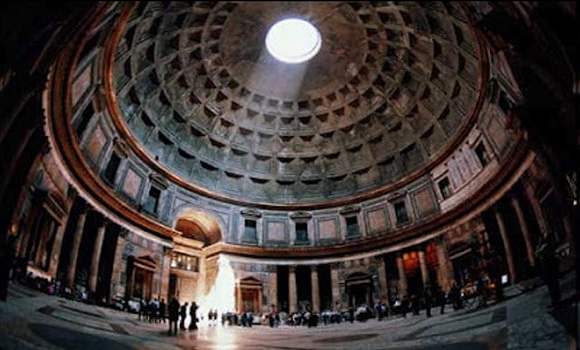
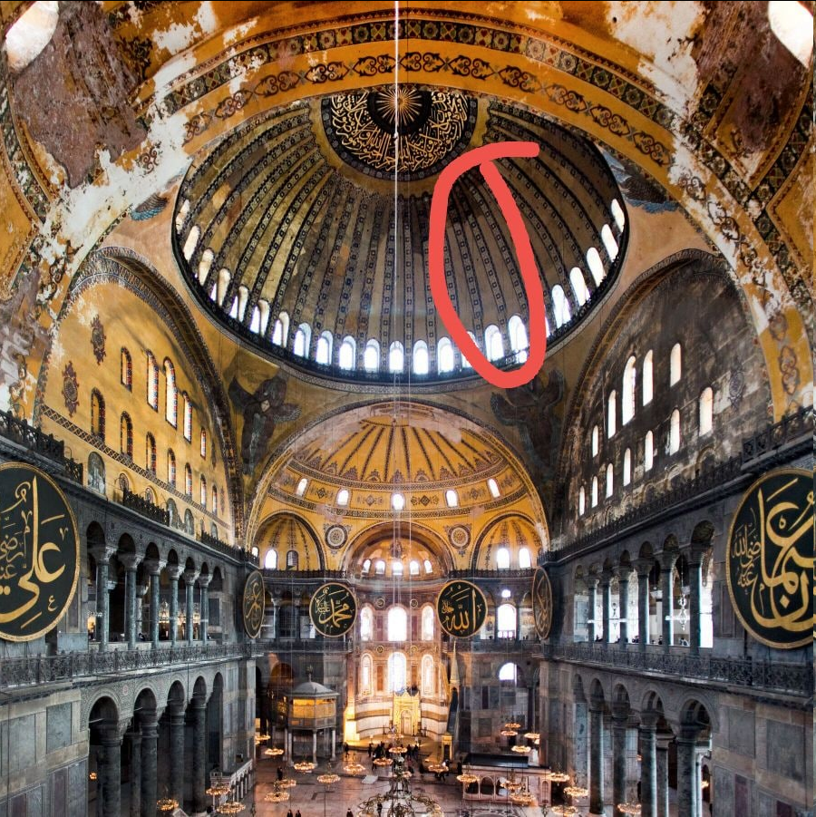

@匿名
关于穹顶我以前做过一个梦。之前我其实不太明白它的妙处在哪。但是那个梦直接让我明白了。
我在梦里看见的场景是，我在一个城市内部，而天空竟然变成了无穷无尽的穹顶，像圣索非亚一样，一个穹顶接着另一个穹顶。也就是说我梦到了一个以穹顶为天空的城市，而穹顶的下面就是城市的楼房，街道。然后我突然明白了，这个梦的景象其实是告诉我穹顶用来塑造内部宏伟的空间感是无与伦比的，其他任何结构都比不上。
比如即使是故宫的大殿，但其结构所限依然只是说能看到横梁的，只是建造得尽可能非常高而已。但是只要在这个天花板到地面之间，有任何的阻碍物，人的视觉就会立即觉得这不是真正的空间，而只是一个室内。
所以唯一可能的的构造就是让这个天花版结构自己支撑自己，换句话说把横梁掩藏在天花板的结构内部。那不就是穹顶嘛。这个圆球壳的下面支撑上面，循环往复。对，说的就是万神殿。

试想，在这个空间内插入一根横梁，马上你就会觉得这个宏伟的感觉没有了？所以我想，在宫殿内他们肯定开始还是想要做的宏伟的，只是并不知道穹顶如何建造，所以横梁还是不得不存在。
顶部的这个开孔可能未必是单纯照明，我听说的说法是因为力学结构限制没办法封上。因为建造这个万神殿穹顶是从底部逐渐按照一个圆环一个圆环往中间收拢，而最后就逐渐形成了这个空档。但到了收尾的时候发现这个效果也不错，所以就留下了。一半是设计，另一半是技术限制。而，后来文艺复兴时期的建筑又没有这个开窗了啊，因此它反而变成万神殿的特色。
这个效果曾经给了来罗马参观的安藤忠雄极大的启发，然后你在他的建筑里可以看到到处是这种开窗的影子。其实这个构造恰好构成了一个日晷，因此万神殿还自带了计时功能。
关于这个顶端的开口，技术上的理由可能是这样：从底部刚开始搭建穹顶的时候，其切线是近乎垂直的，所以往上继续叠加并没有什么难度；但是随着这个球壳越来越封闭，到了接近中间那个圆孔的时候切线就几乎水平了，因此再往中心搭建就很难利用上支持力，因此最终妥协的结果就是不得不留出这样一个天窗。直到后来技术升级了之后才可能造出不带天窗的穹顶。
圣索非亚这样的穹顶就是属于更新的技术。我想可能是在外边的结构不一样，比如说这个穹顶从底边每一点到中间的圆心那一条条的线，可能就是在外边做了脚手架一般的加固措施。

这个穹顶艺术上的一大亮点就是底边那一圈开窗，这圈开窗效果相当好，你们可以想象下如果没有这个，那么这穹顶会显得很沉闷。开了这个窗，这个顶盖像是悬浮在空中一样。
可以和万神殿这个效果比较一下。万神殿的穹顶底边就没有这一圈窗，所以，如果再没有那个天窗的话，感觉上虽然说还是宏伟，但总有一种隐隐地，人在陵墓内部的感觉。。。但是有了外面的光线充分地透进来，马上这个内部空间显得就不一样了，像是活的。而结构上万神殿是开不了那个边窗的，因为万神殿穹顶似乎只是混凝土浇筑起来的，内部缺乏那种骨架一样的支撑。所以一旦在上面开任何洞，整体结构都可能遭到破坏。但是圣索非亚不一样，那个边窗能开的原因大概是，用来支撑的结构主要都用在边窗直接的拱柱上了。